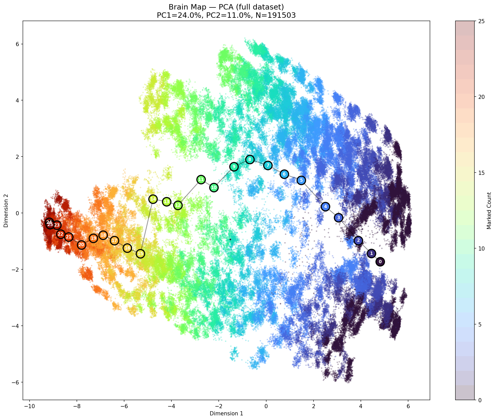
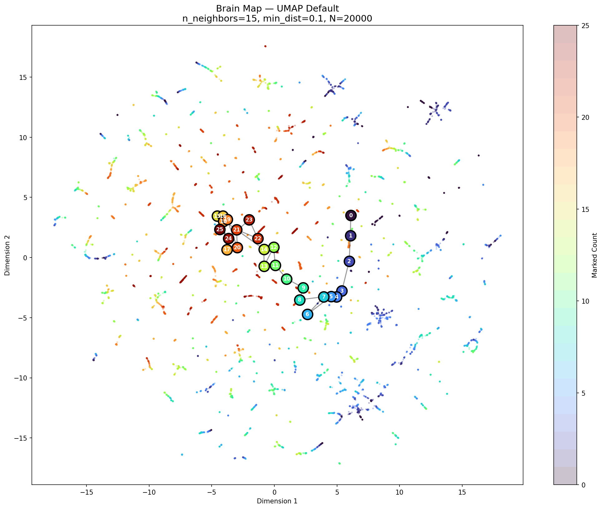
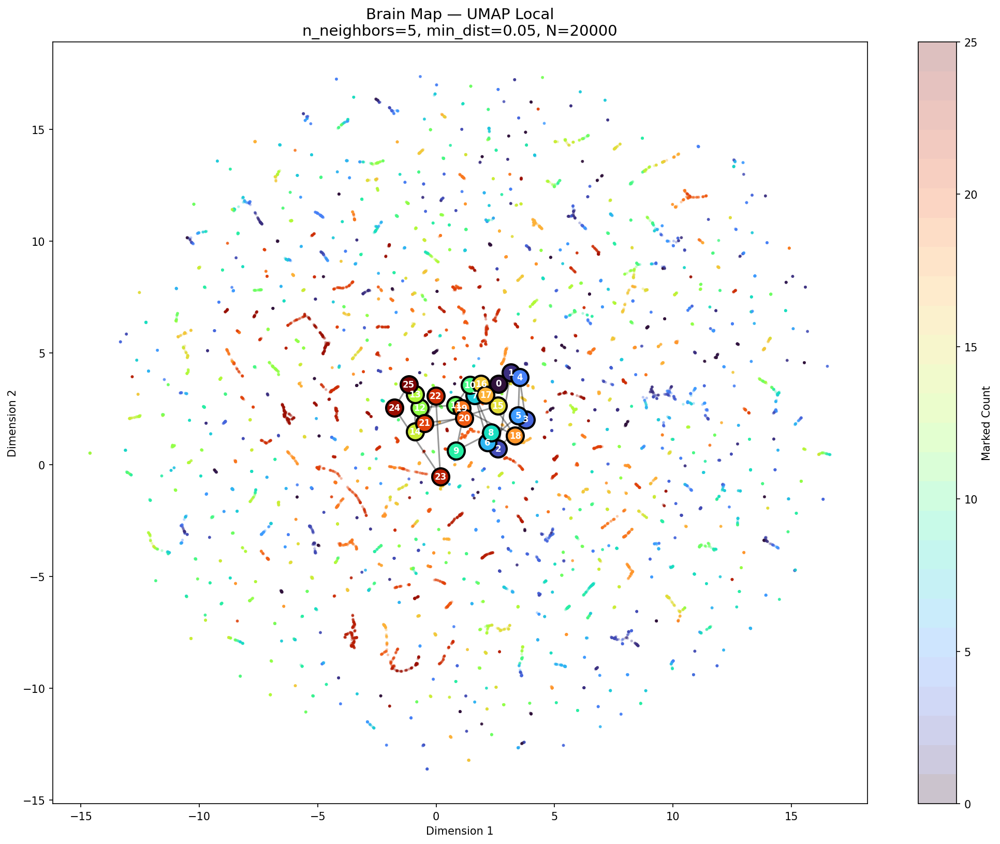
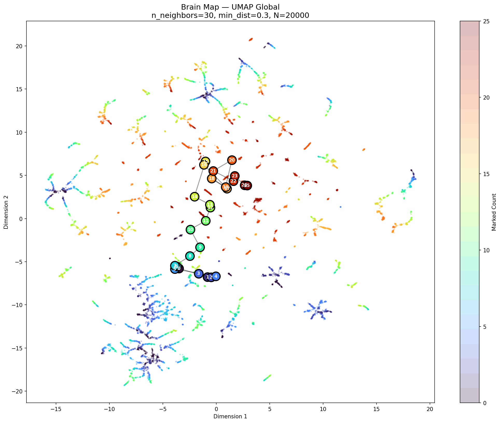
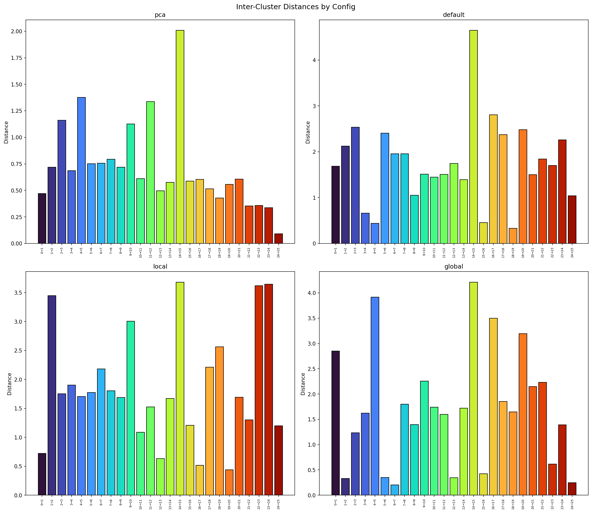
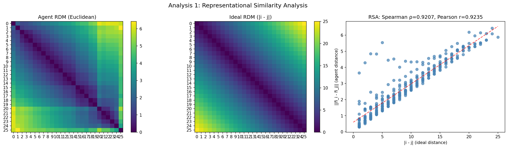
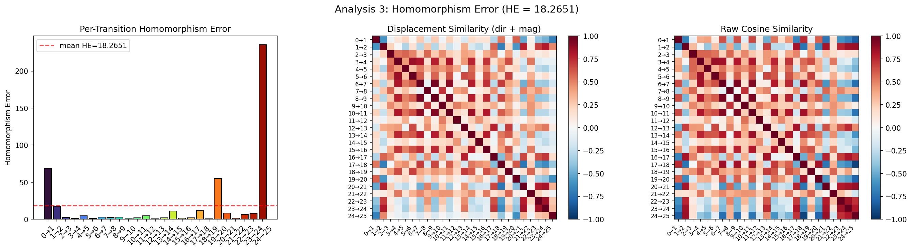
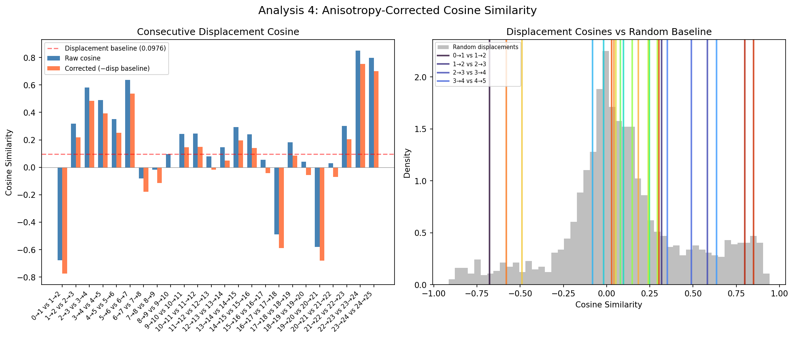
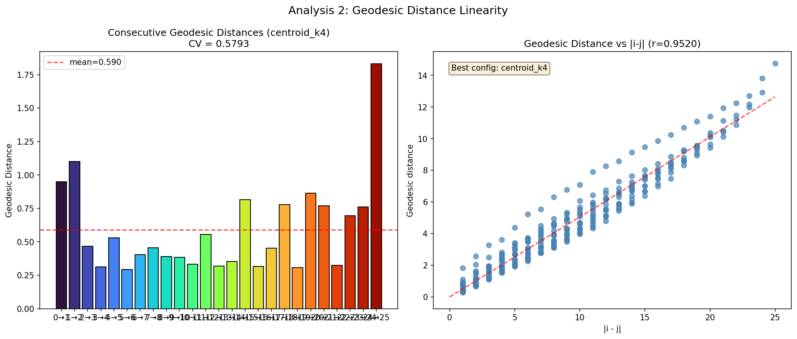

Train: 312K steps, 80 episodes (sweep: 3/5/8/10/12/15/20/25 blobs) · 191,503 eval timesteps · 512-dim RSSM latent





| Metric | Old (0-8) | New (0-25) | Change |
|---|---|---|---|
| RSA Spearman ρ | 0.9508 | 0.9897 | +0.039 ↑ |
| RSA Pearson r | 0.9556 | 0.9875 | +0.032 ↑ |
| HE Total | 2.827 | 7.408 | +4.581 ↓ |
| Mean Pairwise Cosine | 0.202 | 0.167 | −0.035 ↓ |
| Displacement Sim Mean | 0.204 | 0.161 | −0.043 ↓ |
| Corrected Disp Mean | 0.385 | 0.179 | −0.207 ↓ |
| Transition | Old HE | New HE | Old Norm | New Norm |
|---|---|---|---|---|
| 0→1 | 9.59 | 32.51 | 5.118 | 3.432 |
| 1→2 | 1.60 | 6.68 | 2.659 | 1.670 |
| 2→3 | 0.90 | 7.83 | 2.228 | 1.787 |
| 3→4 | 1.40 | 3.36 | 2.518 | 1.267 |
| 4→5 | 2.61 | 11.16 | 3.046 | 2.118 |
| 5→6 | 3.57 | 1.73 | 3.356 | 1.030 |
| 6→7 | 1.53 | 1.34 | 2.384 | 0.944 |
| 7→8 | 1.42 | 2.94 | 0.957 | 1.194 |
| 8→9 | — | 1.77 | — | 0.976 |
| 9→10 | — | 5.24 | — | 1.503 |
| 10→11 | — | 2.10 | — | 1.033 |
| 11→12 | — | 11.20 | — | 2.103 |
| 12→13 | — | 3.00 | — | 1.135 |
| 13→14 | — | 1.78 | — | 1.006 |
| 14→15 | — | 21.11 | — | 2.757 |
| 15→16 | — | 2.14 | — | 1.081 |
| 16→17 | — | 2.63 | — | 1.130 |
| 17→18 | — | 2.65 | — | 1.128 |
| 18→19 | — | 3.34 | — | 1.176 |
| 19→20 | — | 37.85 | — | 3.751 |
| 20→21 | — | 4.57 | — | 1.410 |
| 21→22 | — | 2.52 | — | 1.015 |
| 22→23 | — | 5.09 | — | 1.381 |
| 23→24 | — | 3.92 | — | 1.262 |
| 24→25 | — | 6.75 | — | 1.398 |




Both models produce the same verdict. The 25-blob model has better ordinal structure (ρ = 0.990) but worse successor consistency (HE = 7.41 vs 2.83). The model solves counting by recognizing configurations, not by iterating a successor function. Massive HE spikes at round-number transitions (0→1: 32.5, 14→15: 21.1, 19→20: 37.9) indicate the latent manifold has structural discontinuities where observation geometry changes qualitatively. More range = more boundary discontinuities = harder to learn a single uniform +1 operation. This is "lookup table" numeracy rather than "algorithmic" numeracy.